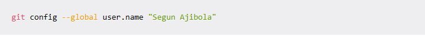
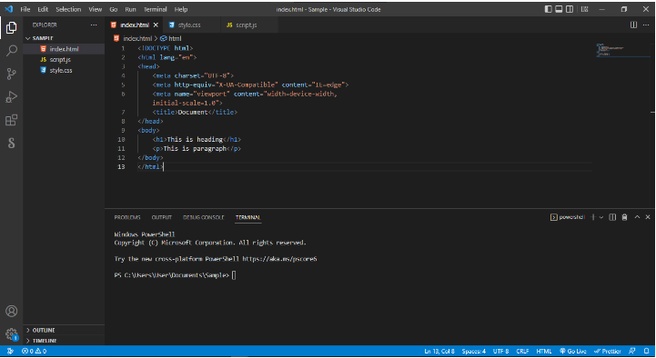
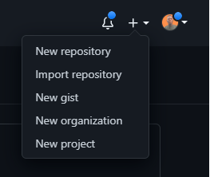
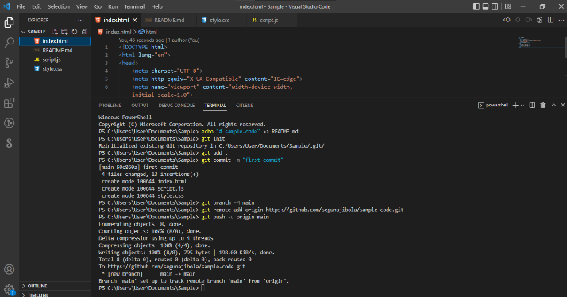

How to Use Git and GitHub - Introduction for Beginners
Git and GitHub are common tools used in programming. They help you manage different versions of your code and collaborate with other developers.
Building projects is one of the core parts of being a developer. And Git and GitHub are essential tools you'll use when building projects with others.
But they can look complicated if you haven't used them before. So I wrote this article to simplify how Git and GitHub work.
What are Git and GitHub?
Git was developed in 2005 by Linus Torvalds as open source software for tracking changes in a distributed version control system.
Git is open source because its source code is made freely available for anyone to modify and use, aside from its creator. Open-source projects are built and maintained collectively by different developers in different locations.
Git track changes via a distributed version control system. This means that Git can track the state of different versions of your projects while you're developing them. It is distributed because you can access your code files from another computer - and so can other developers.
When you're building an open source project, you'll need a way to document or track your code. This helps make your work organized, and lets you keep track of the changes you've made. This is what Git lets you do.
But you also need a place to host your code - which makes controlling each version of your project easier and faster. This is where GitHub comes in.
GitHub is a "hub" (a place or platform) where Git users build software together. GitHub is also an hosting provider and version control platform you can use to collaborate on open source projects and share files. When you're using GitHub, you're working with Git beneath the hood.
Why Should You Learn Git and GitHub?
According to Techmonitor.ai, over 73 million developers use GitHub as of November 2021. And the GitHub community is set to hit 100 million users by 2025.
As you can see, millions of people all over the world use these tools, and the numbers just keep going up.
Because of this, more companies are requiring new hires to know how to use Git and GitHub. So if you're looking for a developer job, these are essential skills to have.
If you're not using Git and GitHub, it's clear - you should be!
Differences between Git and GitHub
Git is a version control system that manages and keeps track of your code.
GitHub, on the other hand, is a service that let you host, share, and manage your code files on the internet.
GitHub uses Git underneath, and lets you manage your Git repositories or folders easily on its platform.
So Git is the actual version control system and GitHub is the platform where you host your code.
If you want to learn more about the differences between these two tools, you can Read this tutorial.
How to Start Using Git and GitHub
Step 1 - Install Git
Git comes preinstalled in some Macs and Linux-based systems, but you can always check if you have Git installed in your machine by typing git version in your terminal. You can use the Command Prompt to do this.

As you can see above, I have Git version 2.31.1 installed on my Windows computer. If you don't have Git installed in your computer, you won't get a version.
You can download Git here and then select your operating system to download.

Follow the necessary installer guide until installation is complete. Open the command prompt and type git version to verify that Git was successfully installed.
Step 2 - Create a GitHub Account.
To create an account on GitHub, you will be asked for some personal information like name, confirm your email, set a username and password, and your account should be set up in minutes.
Create an account on GitHub.com here.
Step 3 - Connect your GitHub account to your Git account.
You'll do this from your terminal.
To set your Git username, type this in your terminal:

To confirm that you have set your Git username correctly, type this:

You should have "youremail@gmail.com" as the output.
You will be asked to authenticate your GitHub account, so just sign in with the same email to confirm.
Step 4 - Create and edit your code files locally

Step 5 - Create a repository on GitHub
Click the + sign at the top right corner to create a new repository. Repositories are like your code folders online.

You will be prompted to this page:


Step 6 - Push your local code to GitHub
You can use the code editor built-in terminal to use Git to push your code to GitHub. Click ctrl + shift + ' to open the terminal in VSCode.
Input the commands below one after the other in your terminal. Press the Enter key to proceed after every input.

echo "# sample-code" >> README.md
git init
git add .
git commit -m "first commit"
git branch -M main
it remote add origin https://github.com/engsabbir/sample-code.git
g git push -u origin main
Note that we have git add README.md in the repository on GitHub. But here we have git add ., which is to let Git add all our code files instead of the README.md file which will be created by . So if you have created other files in your local folder, you need to use git add . to add all files.
Take note that git remote add origin https://github.com/engsabbir/git-and-github will contain the link to your own repository and it will have have the name of your GitHub account.